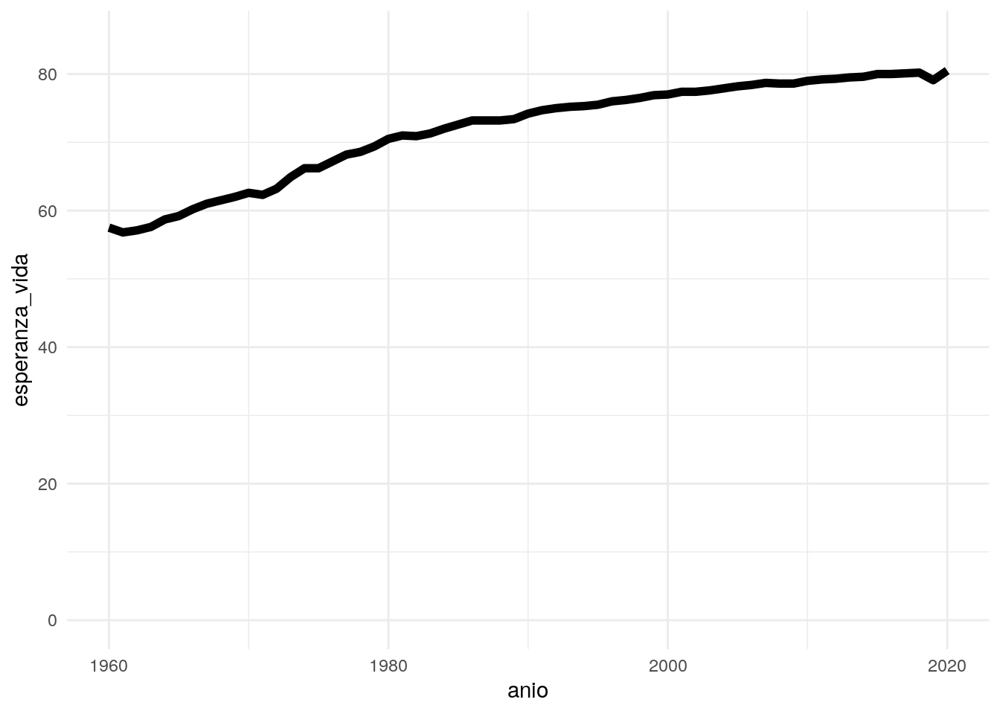
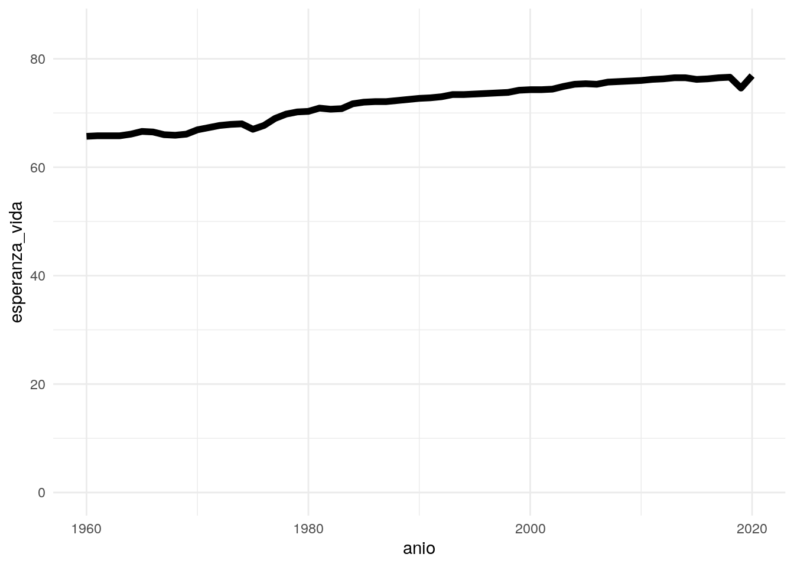

código fuente
library(readr)
library(dplyr)
library(ggplot2)
desarrollo <- read_csv(here::here("datos/datos-desarrollo.csv"))Vamos a mostrar cómo crear “referencias cruzadas” para, valga la redundancia, hacer referencia a nuestras figuras en un reporte.
Para este ejemplo usaremos los datos sobre desarrollo que creamos hace algunas semanas.
library(readr)
library(dplyr)
library(ggplot2)
desarrollo <- read_csv(here::here("datos/datos-desarrollo.csv"))(Incluyo un párrafo mínimo solo para mostrar como funciona esto de las referencias cruzadas)
En el caso de Chile, los resultados obtenidos se muestran en la Figura 1:
desarrollo |>
filter(pais == "Chile") |>
ggplot(aes(x = anio, y = esperanza_vida)) +
geom_line(size = 2) +
scale_y_continuous(limits = c(0, 85)) +
theme_minimal()
En el caso de Argentina, la esperanza de vida ha tenido la evolución que se muestra en la Figura 2:
desarrollo |>
filter(pais == "Argentina") |>
ggplot(aes(x = anio, y = esperanza_vida)) +
geom_line(size = 2) +
scale_y_continuous(limits = c(0, 85)) +
theme_minimal()
hergher hgjkrehgreg o hrg q Figura 1
Tal como dice (Ryan 2022) esto es muy importante. Algo similar piensa (Manning et al. 2014).